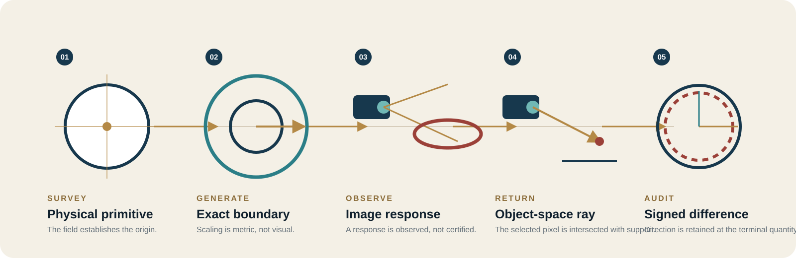
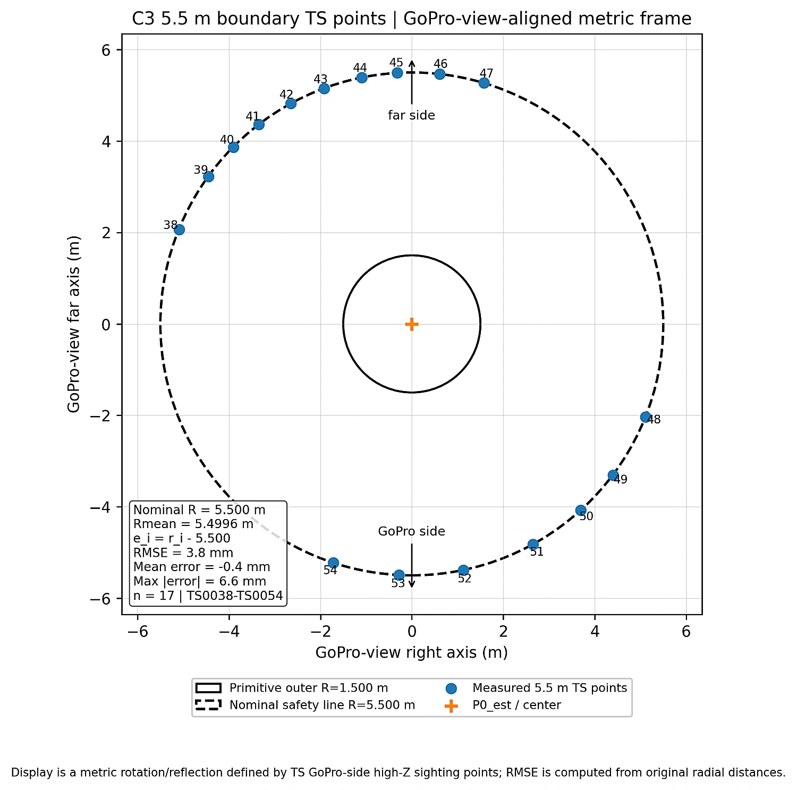

Useful for visualization, insufficient for certification.

CASE 001 / PAPER UNDER REVIEW
From a surveyed primitive
to an auditable boundary.
Can a single oblique image test whether a field-generated design boundary has been preserved?
FIELD RECORDPhysical reference before image interpretation
01
QUESTION
A projected boundary may look correct and still fail as a measurement.
Visual agreement answers a perceptual question. The paper asks a metric one.
The design boundary is first generated in object space from a surveyed primitive. The image is then used only as an observation channel. Its response is returned to object space and compared at the terminal quantity.
This separation prevents the image from defining the reference it is later asked to verify.
≠
Requires an independent datum, declared model and terminal comparison.
02
THEORY
FIVE EQUATIONS CLOSE THE CHAIN
Each equation performs one role—and no role validates itself.

Fit the physical origin and primitive radius.
The measured points establish the origin and scale before the camera contributes anything.
Generate the design boundary by declared metric scaling.
The boundary is a geometric consequence of the surveyed primitive, not a line chosen in the image.
Carry the object-space boundary into the image.
The camera model predicts where a known object-space point should appear. The prediction is a search address, not the final measurement.
Return the observed image response to object space.
The selected response pixel becomes a world ray. A declared support surface closes the 3D intersection.
Preserve direction at the final radial discrepancy.
The sign is retained rather than collapsed into magnitude. Its physical interpretation follows the manuscript’s declared convention.
Public explanation only. Symbols and interpretation should be read with the final accepted manuscript when available.
03
FIELD REALIZATION
The geometry existed before it became a figure.
The installation combines a surveyed datum, a physical primitive, an exact generated boundary, camera stations and independent TS references.

The diagram and photographs show the physical arrangement from both metric and visual viewpoints. The complete observation accounting remains in the manuscript and supporting package.
Physical datum
The origin and primitive are surveyed independently of the image.
Multiple placements
Central, lateral and depth-displaced arrangements test different viewing geometry.
Multiple distances
Increasing range changes projected observability and inverse sensitivity.
Independent references
Selected TS boundary points challenge the generated geometry in object space.
04
SELECTED EVIDENCE
OBJECT-SPACE VALIDATION
Three placements. Two views. One metric frame.
The explorer below shows selected TS boundary checks only. It does not substitute for the full terminal image audit.

3.8 mm17 points
7.5 mm16 points
14.0 mm8 points
05
INTERPRETATION
What the selected object-space checks do—and do not—establish.
The generated boundary is physically testable.
The selected TS references lie around the nominal boundary with millimetre-scale radial residuals in these examples.
Placement changes support and fit.
C3 is the densest and smallest-RMSE example; D3 contains fewer selected points and the largest RMSE.
Object-space validation is not the image audit.
The images above verify the generated boundary, not the complete image response, back-projection and signed terminal discrepancy.
CLAIM BOUNDARY
A credible result includes the limits of what it can say.
- The physical datum and surveyed primitive precede the image.
- Exact metric scaling generates the design boundary.
- Selected TS points independently check the object-space boundary.
- Projection and back-projection are explicitly connected.
- The terminal difference preserves sign.
- Identical performance for arbitrary cameras or sites.
- A complete GUM uncertainty statement.
- The full 27-condition image-audit result.
- Public release of raw coordinates, calibration files or reviewer correspondence.
- That an unverified case is equivalent to zero error.
Do not claim what the measurement chain cannot support.
RELEASE LEDGER
Public explanation now.
Complete evidence with the paper.
The current site exposes the research question, selected theory, field realization and limited object-space checks. The full method, terminal results and reproducibility package remain tied to the manuscript’s release status.
Research questionRELEASED
Core theoretical chainRELEASED
Selected object-space evidenceRELEASED
Full terminal image auditWITHHELD
Raw data and implementationWITHHELD
PaperUNDER REVIEW